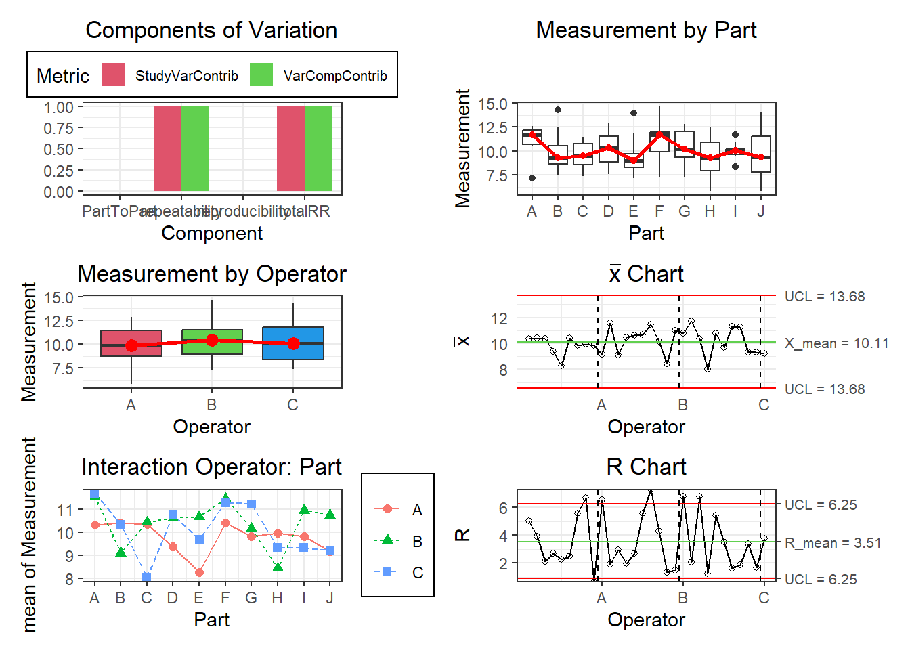

Capítulo 6 Cambio de Funciones
6.1 Fase 1: Definir
6.1.1 1. Función Pareto
- Resultados antes:
defectos <-c(rep("E",62),rep("B",15),rep("F",3),rep("A",10),rep("C",20),rep("D",10))
qualityTools::paretoChart(defectos)##
## Frequency 62 20 15 10 10 3
## Cum. Frequency 62 82 97 107 117 120
## Percentage 51.7% 16.7% 12.5% 8.3% 8.3% 2.5%
## Cum. Percentage 51.7% 68.3% 80.8% 89.2% 97.5% 100.0%##
## Frequency 62.00000 20.00000 15.00000 10.000000 10.000000 3.0
## Cum. Frequency 62.00000 82.00000 97.00000 107.000000 117.000000 120.0
## Percentage 51.66667 16.66667 12.50000 8.333333 8.333333 2.5
## Cum. Percentage 51.66667 68.33333 80.83333 89.166667 97.500000 100.0- Resultados ahora:

Podemos utilizar parámetros para mostrar la tabla o la gráfica:
## E C B A D F
## Frequency 62.00 20.00 15.00 10.00 10.00 3.0
## Cum.Frequency 62.00 82.00 97.00 107.00 117.00 120.0
## Percentage 51.67 16.67 12.50 8.33 8.33 2.5
## Cum.Percentage 51.67 68.33 80.83 89.17 97.50 100.0Podemos cambiar los colores de los puntos y las barras:

6.2 Fase 2: Medir
6.2.1 Capacidad de Calibre - MSA Tipo I
Para poder implementar esta función cg, primero debemos modificar 3 funciones que se utilizan en esta función macro.
Además utilizaremos los siguientes datos de pruebas:
x <- c(9.991, 10.013, 10.001, 10.007, 10.010, 10.013, 10.008, 10.017, 10.005, 10.005, 10.002, 10.017, 10.005, 10.002, 9.996, 10.011, 10.009, 10.006, 10.008, 10.003, 10.002, 10.006, 10.010, 9.992, 10.013)
target = 10.003
tolerance = c(9.903, 10.103)
ref.interval = pnorm(3) - pnorm(-3)
facCg = 0.2
facCgk = 0.1
n = 0.2
type = "b"
col = "black"
pch = 19
#xlim = NULL
#ylim = NULL
conf.level = 0.95
cex.val = 1.5sd = sd(x)
mean = mean(x)
ref.ar = qnorm(ref.interval, mean, sd) - qnorm(1 - ref.interval,mean, sd)
quant1 = qnorm((1 - ref.interval)/2, mean, sd)
quant2 = qnorm(ref.interval + (1 - ref.interval)/2, mean,sd)
xlim = c(0, length(x))
ylim = c(min(x, target - n/2 * (abs(diff(tolerance))), quant1, quant2),
max(x, target + n/2 * (abs(diff(tolerance))), quant1, quant2))6.2.1.1 CgRunChart
- Resultados antes:
qualityTools::cgRunChart(x = x, target = target, tolerance = tolerance,
ref.interval = ref.interval, facCg = facCg, facCgk = facCgk,
n = n, type = type, col = col, pch = pch, xlim = xlim,
ylim = ylim, main = "Run Chart", conf.level = conf.level, cgOut = FALSE)
- Resultados Ahora:
cg_RunChart(x = x, target = target, tolerance = tolerance,
ref.interval = ref.interval, facCg = facCg, facCgk = facCgk,
n = n, type = type, col = col, pch = pch, xlim = xlim,
ylim = ylim, main = "Run Chart", conf.level = conf.level, cgOut = FALSE)## Warning: Using `size` aesthetic for lines was deprecated in ggplot2 3.4.0.
## ℹ Please use `linewidth` instead.
## This warning is displayed once every 8 hours.
## Call `lifecycle::last_lifecycle_warnings()` to see where this warning was
## generated.
6.2.1.2 cgHist
- Resultados Anteriores:
qualityTools::cgHist(x = x, target = target, tolerance = tolerance, ref.interval = ref.interval,
facCg = facCg, facCgk = facCgk, n = n, col = "lightblue",
xlim = xlim, ylim = ylim, main = paste("Histogram of",
deparse(substitute(x)), "- target"), conf.level
= conf.level, cgOut = FALSE)
- Resultados Ahora:
cg_HistChart(x = x, target = target, tolerance = tolerance, ref.interval = ref.interval,
facCg = facCg, facCgk = facCgk, n = n, col = "lightblue",
xlim = xlim, ylim = ylim, main = paste("Histogram of",
deparse(substitute(x)), "- target"),
conf.level = conf.level, cgOut = FALSE)
6.2.1.3 cgToleranceView
- Resultados Antes:
qualityTools::cgToleranceView(x = x, target = target, tolerance = tolerance,
ref.interval = ref.interval, facCg = facCg, facCgk = facCgk,
n = n, type = type, col = col, pch = pch, xlim = xlim,
ylim = ylim, main = "Tolerance View", conf.level = conf.level, cgOut = TRUE)
- Resultados Ahora:
cg_ToleranceChart(x = x, target = target, tolerance = tolerance,
ref.interval = ref.interval, facCg = facCg, facCgk = facCgk,
n = n, type = type, col = col, pch = pch, xlim = xlim,
ylim = ylim, main = "Tolerance View", conf.level = conf.level, cgOut = TRUE)
6.2.1.4 Funcion cg
Ahora la función cg se modificará de la siguiente forma:
- Resultados Antes:
x <- c ( 9.991, 10.013, 10.001, 10.007, 10.010, 10.013, 10.008, 10.017, 10.005, 10.005, 10.002,
10.017, 10.005, 10.002, 9.996, 10.011, 10.009 , 10.006, 10.008, 10.003, 10.002, 10.006,
10.010, 9.992, 10.013)
qualityTools::cg(x, target = 10.003, tolerance = c(9.903, 10.103))
- Resultados Ahora:

6.2.2 Repetibilidad y reproducibilidad del calibre - MSA Tipo II
Dado que en la industriia se realiza un análisis Gage R&R para evaluar la repetibilidad y reproducibilidad de un sistema de medición, fue necesario en esta sección la creación de la clase gageRR, con una amplia gama de métodos entre ellos plot, además de la creación de dos funciones gageRRDesign y gageRR_, los resultados se muestran a continuación con la aplicación de un pequeño ejemplo:
- Crear un objeto de la clase ‘gageRR’
mi_gageRR <- gageRR$new(
X = data.frame(
Operator = factor(c("A", "B", "C", "A", "B")),
Part = factor(c("P1", "P1", "P2", "P2", "P3")),
Measurement = c(10, 12, 11, 13, 9)
),
ANOVA = NULL, # Esto puede ser NULL inicialmente y luego calcularlo
RedANOVA = NULL, # Igual que ANOVA, puede ser NULL inicialmente
method = "crossed",
Estimates = list(),
Varcomp = list(),
Sigma = 0.5,
GageName = "Gage1",
GageTolerance = 0.1,
DateOfStudy = "2024-05-15",
PersonResponsible = "John Doe",
Comments = "Sample gage R&R study",
b = factor(c("A", "A", "B", "B", "C")),
a = factor(c("P1", "P1", "P2", "P2", "P3")),
y = c(10, 12, 11, 13, 9),
facNames = c("Measurement", "Operator", "Part"),
numO = 3,
numP = 3,
numM = 2
)- Crear el objeto gageRRObj
design_example <- gageRRDesign(
Operators = 3,
Parts = 10,
Measurements = 3,
method = "crossed",
sigma = 6,
randomize = TRUE
)- Crear un diseño para el estudio Gage
design <- gageRRDesign(Operators = 3, Parts = 10, Measurements = 3, method = "crossed", sigma = 6, randomize = TRUE)
design$X$Measurement <- rnorm(nrow(design$X), mean = 10, sd = 2)- Ejecutar la función
gageRR_
result <- gageRR_(
gdo = design,
method = "crossed", # método "crossed"
sigma = 6, # sigma
alpha = 0.25, # Nivel de significancia
tolerance = NULL, # Tolerancia
dig = 3 # Número de dígitos a mostrar en los resultados
)##
## AnOVa Table - crossed Design
## Df Sum Sq Mean Sq F value Pr(>F)
## Operator 2 5.79 2.895 0.661 0.520
## Part 9 33.56 3.728 0.851 0.573
## Operator:Part 18 42.42 2.357 0.538 0.928
## Residuals 60 262.85 4.381
##
## ----------
## AnOVa Table Without Interaction - crossed Design
## Df Sum Sq Mean Sq F value Pr(>F)
## Operator 2 5.79 2.895 0.740 0.481
## Part 9 33.56 3.728 0.953 0.485
## Residuals 78 305.27 3.914
##
## ----------
##
## Gage R&R
## VarComp VarCompContrib Stdev StudyVar StudyVarContrib
## totalRR 3.91 1 1.98 11.9 1
## repeatability 3.91 1 1.98 11.9 1
## reproducibility 0.00 0 0.00 0.0 0
## Operator 0.00 0 0.00 0.0 0
## Operator:Part 0.00 0 0.00 0.0 0
## Part to Part 0.00 0 0.00 0.0 0
## totalVar 3.91 1 1.98 11.9 1
##
## ---
## * Contrib equals Contribution in %
## **Number of Distinct Categories (truncated signal-to-noise-ratio) = 1- Plot del Objeto
gageRR
## [1] "gageRR" "R6"
6.3 Fase 3: Analizar
6.3.0.1 Capacidad del proceso:
- Distribución Normal
##
## Anderson Darling Test for normal distribution
##
## data: datos
## A = 0.5722, mean = 19.749, sd = 1.014, p-value = 0.1191
## alternative hypothesis: true distribution is not equal to normalAdemás, las gráficas QQ-plot pueden obtenerse a partir de la siguiente función:
Así también, los gráficos de probabilidad se pueden calcular con la función ppPlot:
# bounds.lty = 3 -> linea entrecortada
# bounds.col -> color de las bandas
ppPlot(datos, "normal", bounds.lty = 3, bounds.col = "blue")Además si solo queremos obtener la gráfica central, se hace uso de la función .pcr, de la siguiente manera:
- Distribución Weibull
##
## Anderson Darling Test for weibull distribution
##
## data: weib
## A = 0.4183, shape = 2.290, scale = 8.382, p-value <= 0.25
## alternative hypothesis: true distribution is not equal to weibull
6.4 FASE 4: Mejorar
6.4.1 Diseños factoriales \(2^k\)
###### USO DE facDesign ######
dfac <- facDesign(k = 3, centerCube = 4)
#dfac$names()
dfac$names(c('Factor 1', 'Factor 2', 'Factor 3'))
#dfac$names()
dfac$lows(c(80,120,1))
#dfac$lows()
dfac$highs(c(120,140,2))
#dfac$highs()
dfac$summary()## Information about the factors:
##
## Factor 1 Factor 2 Factor 3
## low 80 120 1
## high 120 140 2
## name Factor 1 Factor 2 Factor 3
## unit
## type numeric numeric numeric
## -----------
## StandOrder RunOrder Block A B C y
## 4 4 1 1 1 1 -1 NA
## 10 10 2 1 0 0 0 NA
## 11 11 3 1 0 0 0 NA
## 12 12 4 1 0 0 0 NA
## 7 7 5 1 -1 1 1 NA
## 2 2 6 1 1 -1 -1 NA
## 8 8 7 1 1 1 1 NA
## 3 3 8 1 -1 1 -1 NA
## 5 5 9 1 -1 -1 1 NA
## 1 1 10 1 -1 -1 -1 NA
## 9 9 11 1 0 0 0 NA
## 6 6 12 1 1 -1 1 NA################# USO simProc #################
# Primeros valores
rend <- simProc(x1=120,x2=140,x3=2)
# valores completos
rend <- c(simProc(120,140,1),simProc(80,140,1),simProc(120,140,2),simProc(120,120,1),simProc(90,130,1.5),simProc(90,130,1.5),simProc(80,120,2),simProc(90,130,1.5),simProc(90,130,1.5),simProc(120,120,2),simProc(80,140,2),simProc(80,120,1))
# Asignar rendimiento al diseño factorial
dfac$.response(rend)
dfac$.response()## rend
## 1 0.47566425
## 2 0.18216016
## 3 0.48550108
## 4 0.08209139
## 5 0.21776448
## 6 0.21865571
## 7 0.09358049
## 8 0.21394141
## 9 0.21627297
## 10 0.09928769
## 11 0.18262206
## 12 0.10677419
##
## Call:
## lm(formula = formula, data = self$as.data.frame())
##
## Residuals:
## 4 10 11 12 7 2 8 3
## -0.009284 -0.032366 0.270975 -0.132435 -0.009284 -0.009284 -0.009284 -0.009284
## 5 1 9 6
## -0.009284 -0.009284 -0.031904 -0.009284
##
## Coefficients:
## Estimate Std. Error t value Pr(>|t|)
## (Intercept) 0.21453 0.04419 4.855 0.00831 **
## A 0.01843 0.05412 0.340 0.75063
## B 0.04500 0.05412 0.831 0.45249
## C -0.04664 0.05412 -0.862 0.43735
## A:B 0.01596 0.05412 0.295 0.78275
## A:C -0.07685 0.05412 -1.420 0.22864
## B:C -0.04792 0.05412 -0.885 0.42592
## A:B:C -0.01963 0.05412 -0.363 0.73516
## ---
## Signif. codes: 0 '***' 0.001 '**' 0.01 '*' 0.05 '.' 0.1 ' ' 1
##
## Residual standard error: 0.1531 on 4 degrees of freedom
## Multiple R-squared: 0.5332, Adjusted R-squared: -0.2837
## F-statistic: 0.6527 on 7 and 4 DF, p-value: 0.7085## A B C A:B A:C B:C A:B:C
## 0.3404766 0.8314196 -0.8619011 0.2948855 -1.4199764 -0.8854780 -0.3627240